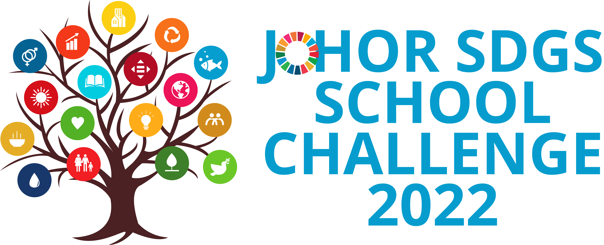
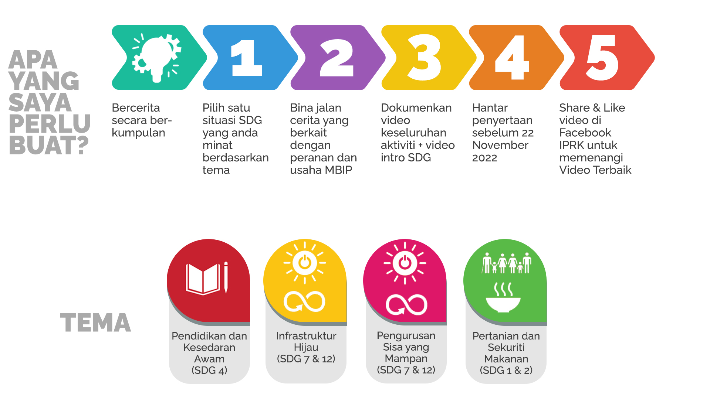

Laman Utama
Galeri
SDG 2020
SDG 2021
Sumber
Guru
Guru Ikon SDG (Sekolah Menengah & Sekolah Rendah)
Pelajar
Saintis Muda (Sekolah Menengah)
Saintis Muda (Sekolah Rendah)
Daftar Johor SDGs School Challenge 2022
Guru
Pelajar
Video Intro
Pembukaan Penyertaan Saringan 28 September hingga 22 November
Secara Online
facebook.com/IskandarPuteriRendahKarbon
Laman Utama
Galeri
SDG 2022
SDG 2021
Sumber
Guru
Guru Ikon SDG (Sekolah Menengah & Sekolah Rendah)
Pelajar
Saintis Muda (Sekolah Menengah)
Saintis Muda (Sekolah Rendah)
Video Intro
Daftar Johor SDGs School Challenge 2022
Guru
Pelajar
KATEGORI B: SAINTIS MUDA (SEKOLAH RENDAH)

Garis Panduan Pertandingan SDGs School Challenge ISKANDAR PUTERI 2022 .
Garis Panduan Pertandingan Umum
Pengisian Pertandingan